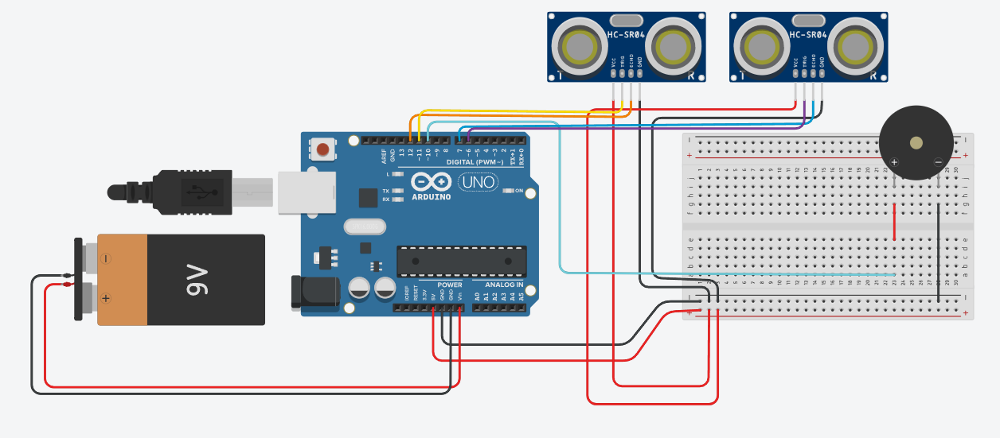

Materials Needed
- Arduino Uno board
- Passive buzzer (1)
- Prototype expansion module (use only the breadboard part) (1)
- Ultrasonic sensors (2)
- USB to printer cable (1)
- 9V battery (1)
- Breadboard jumper wires (10)
- Female to male Dupont wires (8)
Wiring
Follow the wiring schematic below to connect all components correctly:
Upload the Code
Connect your computer to the Arduino Uno using the USB to printer cable. Open the Arduino IDE, copy the code provided in the Versions tab, paste it into a new Arduino sketch, and follow these steps:
- Select your Arduino board: go to Tools > Board > Arduino Uno.
- Select the correct port: go to Tools > Port and choose the port labeled with "Arduino".
- Click the checkmark to verify your code compiles without errors.
- Click the right arrow button to upload the code to your Arduino board.
Print the 3D Parts
Download and print the base and lid CAD files for your Bat Visual Aid device:
Final Assembly
Once all components are wired, code is uploaded, and your 3D-printed parts are ready, assemble everything in a way that securely mounts the sensors and electronics inside the base, then attach the lid. Make sure the sensors are properly exposed so they can detect obstacles, and that the buzzer is securely in place. Test your device to ensure the buzzer sounds correctly at different distances.